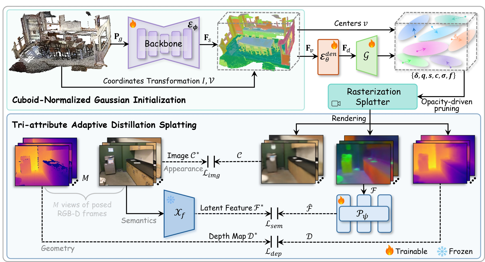
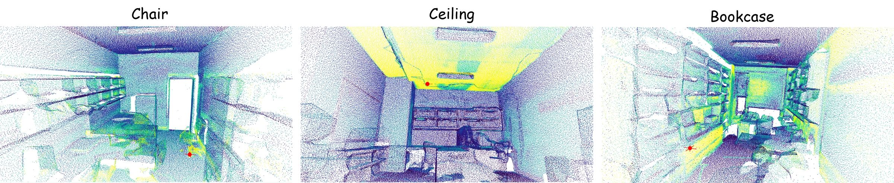
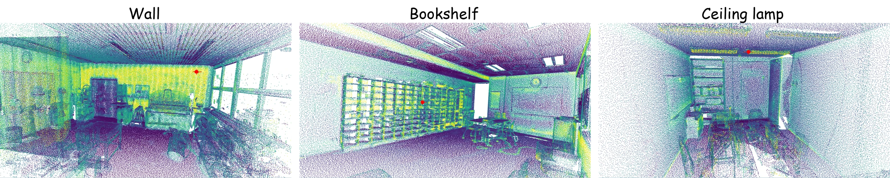
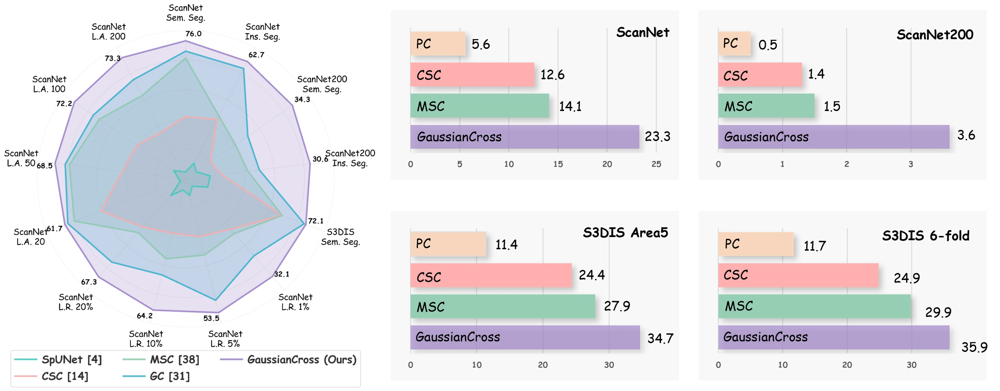
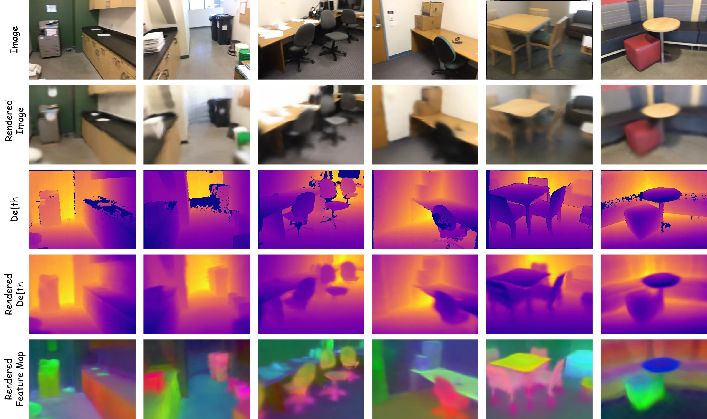

Cross-modal Self-supervised 3D Representation Learning via Gaussian Splatting
1The Hong Kong Polytechnic University · 2Huazhong University of Science and Technology
Drag the slider: the raw scan dissolves into what the pre-trained encoder sees. Nothing here was supervised — couches land on one colour, the floor on another, purely from rendering the scene as Gaussians. These are the four scenes from the paper.
GaussianCross converts scale-inconsistent point clouds into a unified cuboid-normalized Gaussian representation, then distils appearance, geometry and semantics into a 3D feature field — self-supervised pre-training with no labels and no model collapse.
The significance of informative and robust point representations has been widely acknowledged for 3D scene understanding. Despite existing self-supervised pre-training counterparts demonstrating promising performance, the model collapse and structural information deficiency remain prevalent due to insufficient point discrimination difficulty, yielding unreliable expressions and suboptimal performance.
In this paper, we present GaussianCross, a novel cross-modal self-supervised 3D representation learning architecture integrating feed-forward 3D Gaussian Splatting (3DGS) techniques. GaussianCross seamlessly converts scale-inconsistent 3D point clouds into a unified cuboid-normalized Gaussian representation without missing details, enabling stable and generalizable pre-training. A tri-attribute adaptive distillation splatting module then constructs a 3D feature field, capturing appearance, geometry and semantic cues synergetically to maintain cross-modal consistency.
We evaluate on ScanNet, ScanNet200 and S3DIS. GaussianCross shows prominent parameter and data efficiency, and strong generalization, improving full fine-tuning accuracy by 9.3% mIoU and 6.1% AP₅₀ on ScanNet200 semantic and instance segmentation.
The scene 𝐏r is masked at γ = 50% and
grid-subsampled to 𝐏g, then encoded by a sparse 3D backbone
ℰφ into per-point features 𝐅s. Everything
downstream exists only to supervise this encoder — after pre-training it is the single artefact
we keep and transfer.
3D scans arrive at wildly different scales, which is exactly what breaks per-scene 3DGS.
Coordinates are mapped into a unit cube by ℐ and discretized by 𝒱
into X×Y×Z voxels; sparse features are scattered into a dense volume
𝐅v and refined by a 3D CNN ℰθden
into 𝐅d. Each voxel centre becomes a coarse Gaussian mean
ν — no SfM, no per-scene optimization, no lost detail.
Every one of the X×Y×Z voxel centres is an anchor. MLP heads 𝒢 decode
a position offset δ, quaternion q, scale s, colour
c and opacity σ for each, plus a semantic embedding f
that turns the primitive set into a queryable feature field. The refined mean is
μ = ν + δ; anchors whose opacity falls below τ = 0.3 are pruned,
which is what thins the full lattice down to a usable scene.
The Gaussians are rasterized from M = 5 randomly sampled posed views
into colour 𝒞, feature ℱ and depth 𝒟 maps. Colour and
depth are matched to the real RGB-D frames with ℓ1 losses. The rendered feature map is
low-dimensional, so a projection head 𝒫ψ lifts it to
ℱ before a cosine loss aligns it with ℱ* — the
latent of that same real image under a frozen 2D foundation model 𝒳f.
Any such model will do; we use RADIOv2.5. Appearance, geometry and semantics must be consistent
from every viewpoint — that joint constraint is what stops the representation from collapsing.




mIoU on the validation splits. Pre-training uses no labels of any kind.
| Method | ScanNet | ScanNet200 | S3DIS | ||||
|---|---|---|---|---|---|---|---|
| Venue | Pre-training data | Type | Val mIoU | Val mIoU | Area 5 | 6-fold | |
| Supervised learning from scratch | |||||||
| PointNeXt | NeurIPS 2022 | — | — | 71.5 | — | 70.5 | 74.9 |
| StFormer | CVPR 2022 | — | — | 74.3 | — | 72.0 | — |
| PTv1 | ICCV 2021 | — | — | 70.6 | 27.8 | 70.4 | 65.4 |
| PTv2 | NeurIPS 2022 | — | — | 75.4 | 30.2 | 71.6 | 75.1 |
| SpUNet (baseline) | CVPR 2019 | — | — | 72.2 | 25.0 | 66.3 | 72.4 |
| Self-supervised pre-training | |||||||
| GS³ | arXiv 2024 | ScanNet | Rendering | 73.4+1.2 | — | 70.1+3.8 | — |
| Ponder | CVPR 2023 | ScanNet | Rendering | 73.5+1.3 | — | — | — |
| CSC | CVPR 2021 | ScanNet | Contrast | 73.8+1.6 | 26.4+1.4 | 70.7+4.4 | 75.5+3.1 |
| PC | ECCV 2020 | ScanNet | Contrast | 74.1+1.9 | 26.2+1.2 | 70.3+4.0 | 74.7+2.3 |
| MSC | CVPR 2023 | ScanNet, ArkitScenes | Contrast | 75.5+3.3 | 32.0+7.0 | 70.7+4.4 | — |
| GC | CVPR 2024 | ScanNet | Contrast | 75.7+3.5 | 30.0+5.0 | 72.0+5.7 | — |
| PPT Unsup. | CVPR 2024 | ScanNet, Structure3D, S3DIS | Contrast | 75.8+3.6 | 30.4+5.4 | 71.9+5.6 | — |
| GaussianCross | MM 2025 | ScanNet | Rendering | 76.0+3.8 | 34.3+9.3 | 72.1+5.8 | 76.8+4.4 |
| Supervised pre-training · uses labels, shown for reference | |||||||
| PPT Sup. | CVPR 2024 | ScanNet, Structure3D, S3DIS | 3D Sup. | 76.4+4.2 | 31.9+6.9 | 72.7+6.4 | 78.1+5.7 |
| PonderV2 | arXiv 2024 | ScanNet, Structure3D, S3DIS | 2D Sup. | 77.0+4.8 | 32.3+7.3 | 73.2+6.9 | 79.9+7.4 |
| ARKit LM | CVPR 2025 | ALS200, ScanNet/ScanNet200 | 3D Sup. | 77.0+4.8 | 30.6+5.6 | — | — |
PointGroup decoder, full fine-tuning.
| ScanNet | ScanNet200 | |||||
|---|---|---|---|---|---|---|
| Method | AP₂₅ | AP₅₀ | mAP | AP₂₅ | AP₅₀ | mAP |
| PointGroup | 72.8 | 56.9 | 36.0 | 32.2 | 24.5 | 15.8 |
| PC | — | 58.0 | — | — | 24.9 | — |
| GS³ | — | 59.2 | 37.0 | — | — | — |
| CSC | — | 59.4 | — | — | 25.2 | — |
| MSC | 74.7 | 59.6 | 39.3 | 34.3 | 26.8 | 17.3 |
| GC | — | 62.3 | — | — | 27.5 | — |
| GaussianCross | 77.0+4.2 | 62.7+6.2 | 40.8+4.8 | 38.4+5.8 | 30.6+6.1 | 20.6+4.8 |
Backbone frozen, one linear layer trained (<0.1% of parameters).
| ScanNet | ScanNet200 | S3DIS A5 | S3DIS 6-fold | |||||
|---|---|---|---|---|---|---|---|---|
| Method | mIoU | mAcc | mIoU | mAcc | mIoU | mAcc | mIoU | mAcc |
| SpUNet (full sup.) | 72.2 | 80.2 | 25.0 | 32.9 | 66.3 | 72.5 | 72.4 | 80.9 |
| PC | 5.6 | 9.7 | 0.5 | 0.9 | 11.4 | 18.6 | 11.7 | 19.0 |
| CSC | 12.6 | 18.1 | 1.3 | 2.1 | 24.4 | 32.0 | 24.9 | 32.5 |
| MSC | 14.1 | 20.3 | 1.5 | 2.5 | 27.9 | 35.5 | 29.9 | 37.9 |
| GaussianCross | 23.3 | 30.9 | 3.6 | 5.3 | 34.7 | 44.1 | 35.9 | 45.5 |
mIoU when only a fraction of scenes, or a handful of annotated points per scene, is available.
| Limited scenes (% of the training set) | Limited annotations (labelled points per scene) | |||||||
|---|---|---|---|---|---|---|---|---|
| Method | 1% | 5% | 10% | 20% | 20 | 50 | 100 | 200 |
| SpUNet (baseline) | 26.0 | 47.8 | 56.7 | 62.9 | 41.9 | 53.9 | 62.2 | 65.5 |
| CSC | 28.9 | 49.8 | 59.4 | 64.6 | 55.5 | 60.5 | 65.9 | 68.2 |
| MSC | 29.2 | 50.7 | 61.0 | 64.9 | 60.1 | 66.8 | 69.7 | 70.7 |
| GC | 30.7 | 52.9 | 62.0 | 66.5 | 61.2 | 67.3 | 70.3 | 71.8 |
| PPT | 31.3 | 52.3 | 62.8 | 66.4 | 60.6 | 67.5 | 70.8 | 72.2 |
| GaussianCross | 32.1 | 53.5 | 64.2 | 67.3 | 61.7 | 68.5 | 72.2 | 73.3 |
| Δ vs. baseline | +6.1 | +5.7 | +7.5 | +4.4 | +19.8 | +14.6 | +10.0 | +7.8 |

@inproceedings{yao2025gaussiancross,
title={GaussianCross: Cross-modal Self-supervised 3D Representation Learning via Gaussian Splatting},
author={Yao, Lei and Wang, Yi and Zhang, Yi and Liu, Moyun and Chau, Lap-Pui},
booktitle={Proceedings of the 33rd ACM International Conference on Multimedia},
year={2025}
}